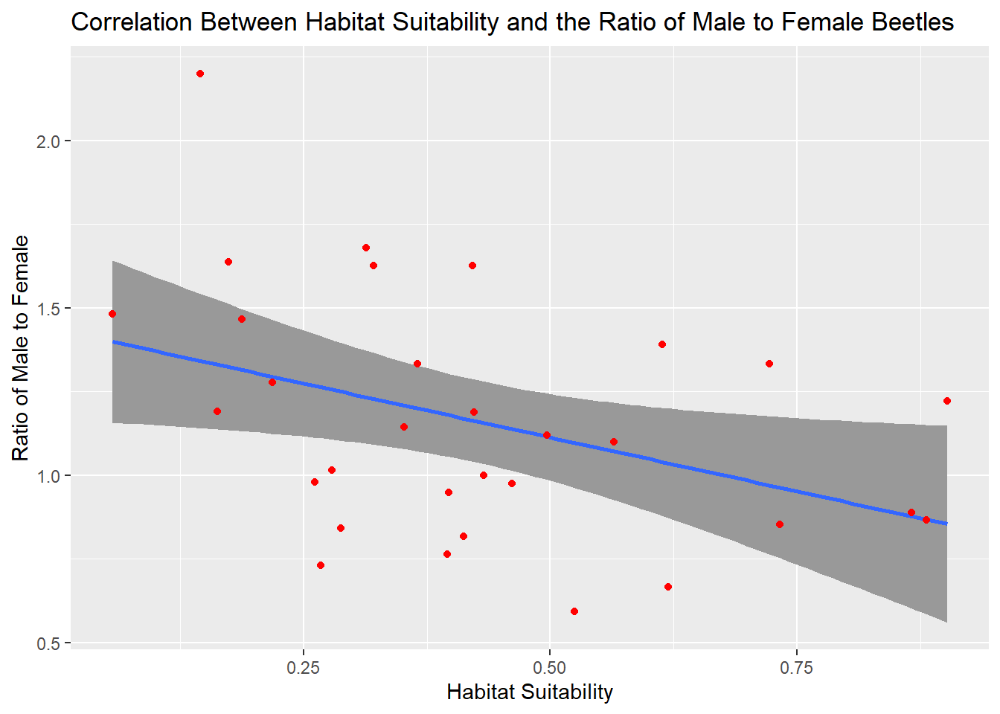
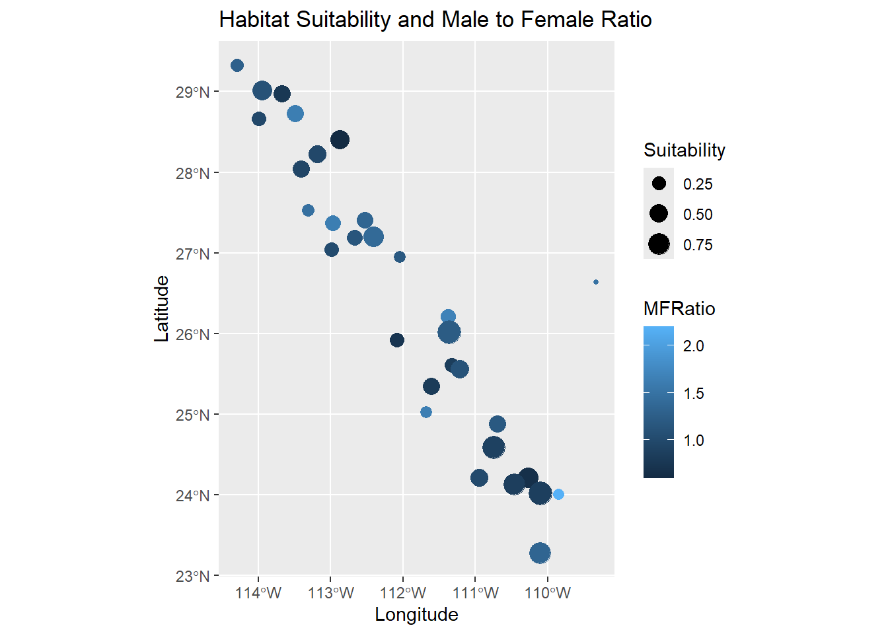
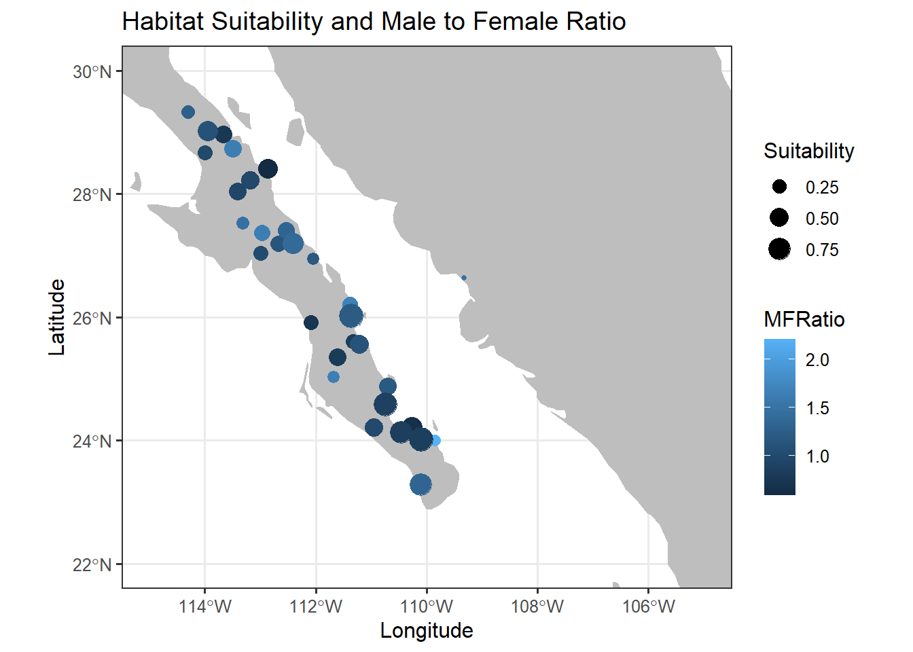

needed_libraries <- c("sf",
"maps",
"units",
"rgdal",
"rgeos",
"GGally",
"raster",
"mapproj",
"leaflet",
"rnaturalearth",
"rnaturalearthdata"
)
# Determines which libraries you do not have
# already installed.
need_inst <- setdiff( needed_libraries,
rownames( installed.packages()) )
# Instrall the neccessary ones.
if( length( need_inst ) ) {
install.packages( need_inst, dependencies = TRUE )
}Spatial Data Assignment

This homework is a bit quick but is designed to make sure that:
- To make sure everyone can get their computer up-to-date with the proper set of libraries so that we can work with geospatial data, and
- Give you some practice turning normal numerical data into geospatial coordinates and performing basic operations.
Spatial Libraries
The following code defines the set of necessary libraries for the next few weeks and then figures out which (potential) subset you need to install. It then installs them all in one call. It will not load them into your session, you’ll have to do that later in your code chunks.
Read Packages
library( tidyverse )
library( lubridate )
library( dplyr )
library( knitr )
library( kableExtra )The Data - Preprocessing
The data for this is some site-level data from the Sonoran Desert bark beetle. The URL is in the next chunk, and is currently being hosted on my class Github repository. Load it in.
url <- "https://raw.githubusercontent.com/dyerlab/ENVS-Lectures/master/data/Araptus_Disperal_Bias.csv"
read_csv( url ) -> dataInteractive Map
Use the leaflet library and make an interactive map. If you can, add a label to each marker with the ID of the site. You can look at the provider tiles here and use on in the addProviderTiles() function.
There is a great tutorial here on how to customize the leaflet display. You may want to go look at it and see what you can use to make a better display.
library( leaflet )
data |>
mutate( Label = paste( "<b>Site:", Site) ) |>
leaflet() |>
addMarkers( ~Longitude, ~Latitude, popup = ~Label ) |>
addProviderTiles( "OpenTopoMap" )Converting to sf Objects
Convert the spatial data in the beetle data.frame into an sf object. Make sure you set the Coordinate Reference System to \(4326\).
library( sf )
data |>
st_as_sf( coords=c("Longitude","Latitude"),
crs = 4326 ) -> data
#head( data )Questions
For these questions, you may want to look at the sf cheat sheet here to find the appropriate geospatial function.
- How far apart (in km) are the sites Constitución (
const) and San Francisquito (sfran)?
data |>
filter(Site %in% c("const", "sfran")) -> Q1
st_distance(Q1[1,], Q1[2,])Units: [m]
[,1]
[1,] 290090distance_kilometers <- st_distance(Q1[1,], Q1[2,]) / 1000
print(distance_kilometers)Units: [m]
[,1]
[1,] 290.09- Is there a correlation between habitat suitability and the ratio of males to female beetles sampled at each locale?
result <- cor.test(data$Suitability, data$MFRatio)
print(result)
Pearson's product-moment correlation
data: data$Suitability and data$MFRatio
t = -2.3484, df = 29, p-value = 0.02589
alternative hypothesis: true correlation is not equal to 0
95 percent confidence interval:
-0.66051230 -0.05287575
sample estimates:
cor
-0.3997266 We found a significant relationship between habitat suitability and the ratio of males to female beetles (Pearson Correlation, \(\rho\) = 0.0258851).
ggplot( data, aes( Suitability,
MFRatio)) +
labs ( title = "Correlation Between Habitat Suitability and the Ratio of Male to Female Beetles",
x = "Habitat Suitability",
y = "Ratio of Male to Female") +
stat_smooth( formula = y ~ x,
method = "lm",
alpha = 1) +
geom_point( col = "red")
- Make a plot using
ggplotof the data with suitability as the size of the points and the sex ratio as the fill color.
ggplot( data, aes(color= MFRatio,
size = Suitability) ) +
geom_sf( ) +
labs ( title = "Habitat Suitability and Male to Female Ratio",
x = "Longitude",
y = "Latitude")
- Reproject the data and plot it again using an EPSG code defined for Mexico UTM zone 12N (see epgs.io for projections).
data |>
st_as_sf( coords=c("Longitude","Latitude"),
crs = 6367 ) -> mexico12n
#st_bbox( mexico12n )
map_data("world") |>
filter( region == "Mexico") -> map
#head( map )
ggplot( ) +
geom_polygon( aes( x=long,
y=lat,
group=group ),
data=map,
fill="grey" ) +
geom_sf( data=mexico12n,
aes(color = MFRatio, size = Suitability),
show.legend = TRUE) +
labs (title = "Habitat Suitability and Male to Female Ratio",
x = "Longitude",
y = "Latitude") +
theme_bw( base_size = 12 ) +
coord_sf( xlim = c(-115, -105),
ylim = c(22, 30) )